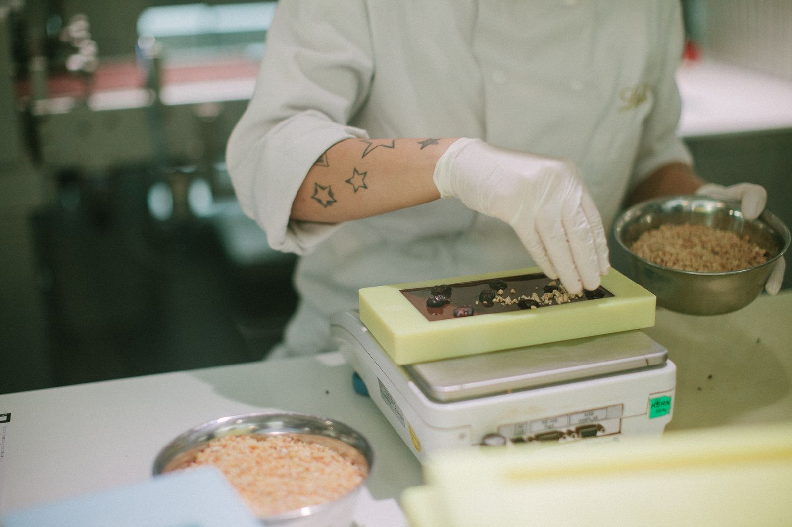
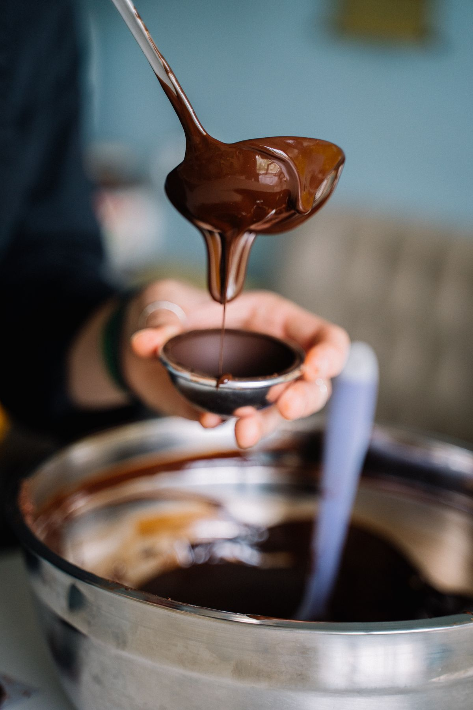

A house bar, a box that had to be fixed in writing, and a library built out of chocolate. Each one is written as it was worked: what was asked, what was done, what came of it — including the parts that went wrong.
The askThe Larkspur was selling around 40 kg a month of a national brand's bars and wanted its own: a bar with the café's name on it, at a wholesale price that still left a retail margin, and — the owner's condition — chosen by taste, not by a sales visit.
What was doneFive candidate lots were tasted blind across three sessions over six weeks, scored against the café's coffee, because that is what the bar would actually be eaten with. The Kilombero 72% won; a nib crunch was added at the café's request after session two. The wholesale arithmetic is the one on the home page: 300 bars at the 300+ tier, 20% off the £8.50 retail price — £6.80 a bar, invoiced monthly on 14-day terms. The wrapper carries the batch number, so a customer asking for "that bar again" can be sold the same chocolate, not a similar one.
The outcomeA standing order since March 2025, never missed. A second bar — House Blend № 3 at 68% — was added in October 2025 for customers who found the 72% austere. The café's owner-manager gives the testimonial on the home page, attached to this bar and no other.

Reference photograph — finishing a moulded bar by hand. Not the Larkspur bar and not this workshop; see CREDITS.md.
02 · The passion-fruit box, fixed in writing
CLIENT: Two deli stockists + direct salesPRODUCT: Filled selection, fresh-cream ganachePROBLEM: Real shelf life ≈ 10 days, dated at 3 weeksFIXED: June 2025
The askA filled box built around a fresh-cream passion-fruit ganache — bright, sharp, and the piece everyone asked for at tastings. It launched in spring 2025 with a three-week date, the standard the workshop used for its other filled boxes.
What went wrong, and what was doneFresh cream is mostly water, and water activity is what decides a ganache's life. In warm shop windows the real life of that filling was nearer ten days: two boxes came back split and fermented before their printed date. The box was withdrawn the same week. The filling was reformulated — a butter-based ganache with the passion fruit carried as a reduced purée, which brought the water activity down and the tested life back to a genuine three weeks. Both stockists were written to before the new boxes shipped, with the reason, the new recipe basis and a credit for the withdrawn stock.
The outcomeNo further returns. The reformulated box now prints its packing date on the front of the lid, not the back — a rule the whole filled range follows since. The lesson is printed here because it is the most useful thing on this page: a date on a box is a promise, and promises get tested.
The askA couple marrying in the library where they met wanted the reading room itself as the centrepiece — 70 cm of façade, shelves and windows — plus 220 filled favours for guests. The venue had no air conditioning; the wedding was in August. That fact shaped the whole job.
What was doneWeek 3: a full-height dummy build in the workshop, which found the pediment joint weak and fixed it with a thicker chocolate buttress. Week 6: the real sections cast and rested. The piece travelled in three sections in cool boxes, was assembled on site in just under three hours with the repair kit open and — this time — the spare panels unused. The favours were packed the same week, dated honestly at three weeks, and labelled with the nut and milk allergens the room handles.
The outcomeThe piece stood for eleven hours in a 19 °C room without a lean or a bloom. The couple took the two reading-room doors home; the rest was eaten by guests across the following week, which is the correct ending for a showpiece and is stated in every showpiece quote this workshop writes.

Reference photograph — pouring a mould, the first step of every cast section. Not the library piece; see CREDITS.md.